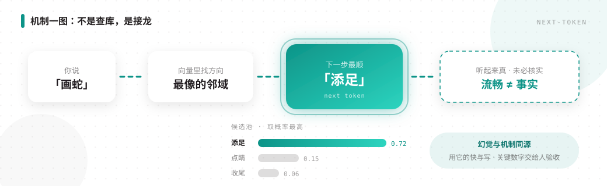
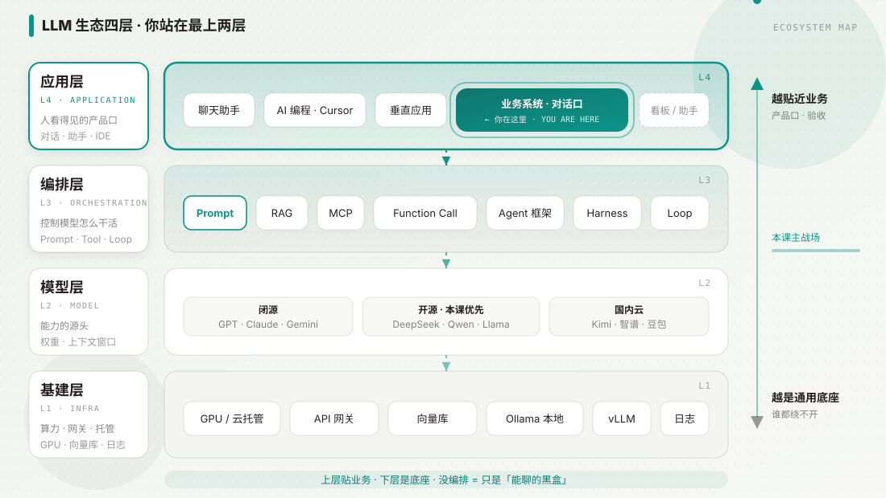
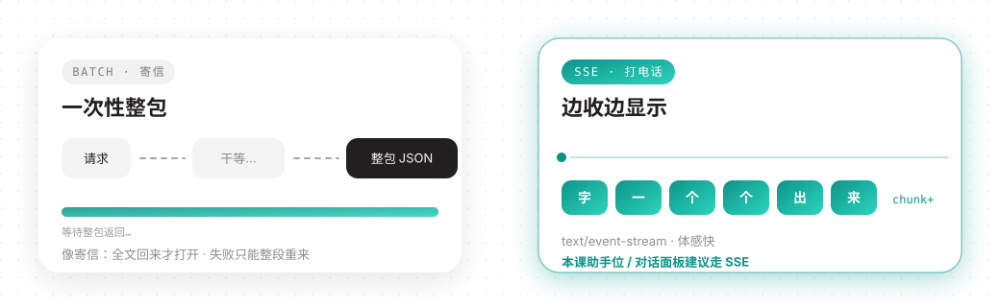

01OPEN · 第二周 · 展示第六天
同仓接对话
第一周业务系统还在本机跑吗？有看板更好看；没有也行——今天挂对话面板。
WEEK 1
业务系统CRUD · 页面 · 接口 · 库
能跑、能验收
TODAY
两件事① 讲清生态四层
② 粘贴 prompts/02 接 LLM
同一仓库
Cursor 等编码 AI
可聊 + SSE

02HISTORY · 大模型从哪来
不是天上掉的
语料 + 架构 + 算力
01
文献语料原材料02
神经网络90s03
Transformer201504
ChatGPT2023课上钉死
怎么来的跟小模型差在哪课后
预训练 / LoRA问 AI 深挖03SMALL MODEL · 以前的「模型」
专用 · 边界清楚
红外测温 + 摄像头人脸 = 传感器 + 专用小模型
语音
ASR听写、转写文字
OCR认字、票据视觉
分类 / 检测人脸、质检视频
理解事件、摘要
输入输出写死
任务单一
不是「啥都能聊」

04GENERALIZATION · 泛化
大在哪？
泛化＝没见过的题也能接
SMALL · 专用
- 小语料 / 小参数
- 干一件写死的事
- 边界清楚
LLM · 够大之后
- 海量文本 · 千亿参数
- 语言空间里往下接
- 显得「啥题都敢接」
05IDIOM CHAIN · 核心机制
成语接龙
认字快的实习生，不是事实库

钉死
流畅 ≠ 核实过幻觉与机制同源
怎么用
用它的快与写关键数字 / 对外承诺 → 人验收
06FOUR LAYERS · 生态四层
楼层认清
上层贴业务 · 下层是底座
L4
应用业务系统 · 助手 · Cursor
L3
编排Prompt · RAG · Tool · Harness
L2
模型权重 · 能力边界
L1
基建算力 · 网关 · 向量库
讲解图 · llm-ecosystem · 自呼吸

07YOU ARE HERE
你在哪一层？
围着最上两层转
应用
用户看得见助手位 / 对话面板
验收过不过
编排
控制怎么干活Prompt · RAG · MCP
Harness · 工具表
没编排 = 能聊的黑盒
08ACCESS · 怎么接到模型
先钉：走 API
主路 · 云端 HTTP API
- 发请求，收回生成结果
- 按量付费，训练营优先
- 建议 DeepSeek 等开源云 API
自部署 · 权重上机
- 显卡 · 电费 · 运维自扛
- 数据不出门时才强需求
- 课上不要求养集群
先问：数据能否出公司门？
有没有人养集群？
09SSE · 一次性 vs 流式
字一个个出来

- 助手位 / 对话面板 → 本课建议 SSE · Key 不进前端
- 练习：粘贴 prompts/02 → Cursor → 本仓 DeepSeek

10MULTIMODAL · 边界
先盯文本
本课范围
- 文本进 · 文本出
- 摘要 · 问答 · 多轮
- 优先 SSE 跑通
先不做
- 截图硬刚助手位
- 语音 / 画图堆满
- 功能堆满 ≠ FDE
边界清晰，比堆满更像 FDE
11TAKEAWAY
心里过三问
- 从哪来？语料 + 架构 + 算力 · 接龙所以会幻觉
- 我在哪一层？应用 + 编排（最上两层）
- 怎么接？云 API · SSE · Key 不进前端
练习
粘贴 prompts/02Cursor → 本仓 DeepSeek SSE
下一节
Token / 窗口 / 幻觉钱 · 硬顶 · 验收
FDE·训练营 / 展示第六天 · 第 1 节
Lecturer · 口播